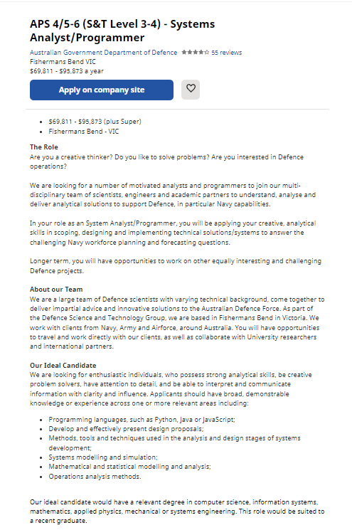

Name: Connor Jack O’Loughlin
Student ID: s3949499
Student email: s3949499@student.rmit.edu.au
Ideal Job
Systems Analyst/programmer
Position details
In this position those who are hired join a team of defence scientists, engineers and programmers in order to analyse and improve the Australian defence forces defences in particular in relation to the navy. This role is appealing to me as I will get to meet people in various different technological fields and likely learn more skills and techniques from them.
Skills and Requirements
- Python, java or javascript
- Effective development and presentation of design proposals
- Methods tools and techniques used in the analysis and design stages of development
- Systems modelling and simulation
- Mathematical and statistical modelling and analysis
- Operations analysis methods
Obtaining these skills
All skills can be either formally or incidentally acquired through the current bachelor of IT program (at least I believe so as I already have basic knowledge of python and design) I will demonstrate these skills by the end of the degree as most skills are acquired through the course. II may demonstrate these skills through either class assignments or personal self set assignments if the ideal criteria are not met.
Plan
I will obtain knowledge of how to do basic or intermediate level of python through both my introduction to programming and programming 1 classes I will be undertaking this year (2022). I will develop effective methods of development and presentation when it comes to design proposals formally through class tasks in intro to IT, User centred design and programming. Additionally informal learning outside of class may be required as these classes may not be covered. However it is likely that these skills will still be formally learnt through the course just not this year. I will acquire knowledge of tools and techniques used in the analysis and design stages of development or already have through my applied computing course in year 12. As this class has tended to cover similar content to the applied computing class I believe that I may also formally learn these techniques in class through my degree. When it comes to system modelling and simulation I may need to learn this skill informally outside of class using the internet as this is not the route of optional classes I have picked. Mathematical and statistical modelling analysis may be learnt through the course of my database concepts class as they both tend to work with databases. Operations analysis methods may either be informally acquired through personal research or incidentally acquired through similar work and job tasks.
